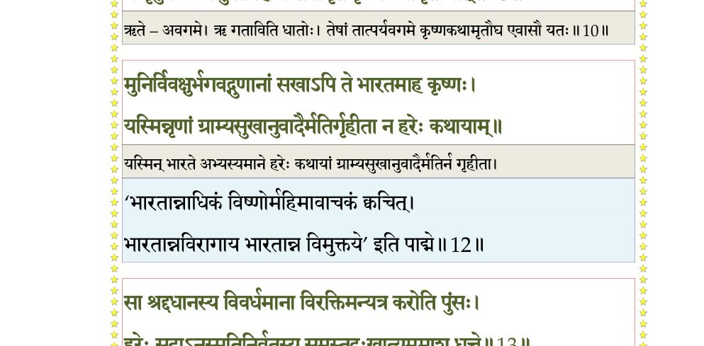
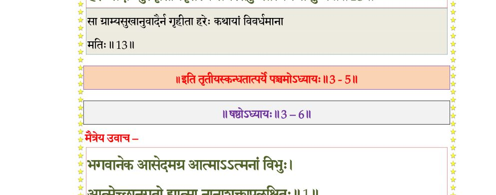

स्कन्ध 3 · अध्याय 5
श्लोक १
शुक उवाच–
द्वारि द्युनद्या ऋषभः कुरूणां मैत्रेयमासीनमगाधबोधम् ।
क्षत्ताऽभिसृत्याच्युतभावशुद्धः पप््राच्छ सौशील्यगुणातितृप्तम्।। १ ।।
द्वारि द्युनद्या ऋषभः कुरूणां मैत्रेयमासीनमगाधबोधम् ।
क्षत्ताऽभिसृत्याच्युतभावशुद्धः पप््राच्छ सौशील्यगुणातितृप्तम्।। १ ।।
श्लोक २
विदुर उवाच–
सुखाय कर्माणि करोति लोको न तैः सुखं नान्यदुपारमं वा ।
विन्देत भूयस्तत एव दुःखं यदत्र युक्तं भगवान् वदेन्नः।। २ ।।
सुखाय कर्माणि करोति लोको न तैः सुखं नान्यदुपारमं वा ।
विन्देत भूयस्तत एव दुःखं यदत्र युक्तं भगवान् वदेन्नः।। २ ।।
श्लोक ३
जनस्य कृष्णाद् विमुखस्य दैवादधर्मशीलस्य सुदुःखितस्य ।
अनुग्रहायेह चरन्ति नूनं भूतानि भव्यानि जनार्दनस्य।। ३ ।।
अनुग्रहायेह चरन्ति नूनं भूतानि भव्यानि जनार्दनस्य।। ३ ।।
श्लोक ४
तत् साधुवर्यादिश शर्मवर्त्म संराधितो भगवान् येन पुंसाम् ।
हृदि स्थितो यच्छति भक्तिपूते ज्ञानं स्वसत्ताधिगमं पुराणम्।। ४ ।।
हृदि स्थितो यच्छति भक्तिपूते ज्ञानं स्वसत्ताधिगमं पुराणम्।। ४ ।।
श्लोक ५
करोति कर्माणि कृतावतारो यान्यात्मतन्त्रो भगवांस्त्र्यधीशः ।
यथा ससर्जाग्र इदं निरीहः संस्थाप्य वृत्तिं जगतो विधत्ते।। ५ ।।
यथा ससर्जाग्र इदं निरीहः संस्थाप्य वृत्तिं जगतो विधत्ते।। ५ ।।
श्लोक ६
यथा पुनः स्वे ख इदं निवेश्य शेते गुहायां स निवृत्तवृत्तिः ।
योगेश्वराधीश्वर एक एतदनुप््राविष्टो बहुधा यथाऽऽसीत्।। ६ ।।
योगेश्वराधीश्वर एक एतदनुप््राविष्टो बहुधा यथाऽऽसीत्।। ६ ।।
श्लोक ७
क्रीडन् विधत्ते द्विजगोसुराणां क्षेमाय कर्माण्यवतारभेदैः ।
मनो न तृप्यत्यपि शृृण्वतां नः सुश्लोकमौलेश्चरितामृतानि।। ७ ।।
मनो न तृप्यत्यपि शृृण्वतां नः सुश्लोकमौलेश्चरितामृतानि।। ७ ।।
श्लोक ८
यैस्तत्त्वभेदैरधिलोकनाथो लोका नलोकान् सह लोकपालान् ।
अचीक्लृपद् यत्र हि सर्वसत्वनिकायभेदोऽधिकृतः प््रातीतः।। ८ ।।
अचीक्लृपद् यत्र हि सर्वसत्वनिकायभेदोऽधिकृतः प््रातीतः।। ८ ।।
श्लोक ९
येन प््राजानामुत वाऽऽत्मकर्मरूपाभिधानेन भिदां व्यधत्त ।
नारायणो विश्वसृगात्मयोनिरेतच्च नो वर्णय विप््रावर्य।। ९ ।।
नारायणो विश्वसृगात्मयोनिरेतच्च नो वर्णय विप््रावर्य।। ९ ।।
श्लोक १०
परावरेषां भगवन् कृतानि श्रुतानि मे व्यासमुखादभीक्ष्णम् ।
न तृप्नुमः कर्णसुखावहानां तेषामृते कृष्णकथामृतौघात्।। १० ।।
न तृप्नुमः कर्णसुखावहानां तेषामृते कृष्णकथामृतौघात्।। १० ।।
भागवततात्पर्यनिर्णय

श्लोक ११
कस्तृप्नुयात् तीर्थपदोऽभिधानात् सत्रेषु वः सूरिभिरीड्यमानात् ।
यः कर्णनाडीं पुरुषस्य यातो भयप््रादां गेहरतिं छिनत्ति।। ११ ।।
यः कर्णनाडीं पुरुषस्य यातो भयप््रादां गेहरतिं छिनत्ति।। ११ ।।
श्लोक १२
मुनिर्विवक्षुर्भगवद्गुणानां सखाऽपि ते भारतमाह कृष्णः ।
यस्मिन् नृणां ग्राम्यसुखानुवादैर्मतिर्गृहीता न हरेः कथायाम्।।१२।।
यस्मिन् नृणां ग्राम्यसुखानुवादैर्मतिर्गृहीता न हरेः कथायाम्।।१२।।
श्लोक १३
सा श्रद्धधानस्य विवर्धमाना विरक्तिमन्यत्र करोति पुंसः ।
हरेः सदाऽनुस्मृतिनिर्वृतस्य समस्तदुःखाप्ययमाशु धत्ते।। १३ ।।
हरेः सदाऽनुस्मृतिनिर्वृतस्य समस्तदुःखाप्ययमाशु धत्ते।। १३ ।।
भागवततात्पर्यनिर्णय

श्लोक १४
ताञ्छोच्यशोच्यानविदोऽनुशोचे हरेः कथायां विमुखानघेन ।
क्षिणोति देवोऽनिमिषस्तु तेषामायुर्वृथावादगतिस्मृतीनाम्।। १४ ।।
क्षिणोति देवोऽनिमिषस्तु तेषामायुर्वृथावादगतिस्मृतीनाम्।। १४ ।।
श्लोक १६
तदस्य कौषारव शर्मदातुर्हरेः कथामेव कथासु सारम् ।
उद्धृत्य पुष्पेभ्य इवार्तबन्धो शिवाय नः कीर्तय तीर्थकीर्तेः।। १५
स विश्वजन्मस्थितिसंयमार्थे कृतावतारः प््रागृहीतशक्तिः ।
चकार कर्माण्यतिपौरुषाणि यानीश्वरः कीर्तय तानि मह्यम्।। १६ ।।
उद्धृत्य पुष्पेभ्य इवार्तबन्धो शिवाय नः कीर्तय तीर्थकीर्तेः।। १५
स विश्वजन्मस्थितिसंयमार्थे कृतावतारः प््रागृहीतशक्तिः ।
चकार कर्माण्यतिपौरुषाणि यानीश्वरः कीर्तय तानि मह्यम्।। १६ ।।
श्लोक १७
शुक उवाच–
स एवं भगवान् पृष्टः क्षत्रा कौषारविर्मुनिः ।
पुंसां निःश्रेयसार्थाय तमाह बहुमानयन्।। १७ ।।
स एवं भगवान् पृष्टः क्षत्रा कौषारविर्मुनिः ।
पुंसां निःश्रेयसार्थाय तमाह बहुमानयन्।। १७ ।।
श्लोक १८
मैत्रेय उवाच–
साधु पृष्टं त्वया साधो लोकान् साध्वनुगृह्णता ।
कीर्तिं वितन्वता लोके आत्मनोऽधोक्षजात्मनः।। १८ ।।
साधु पृष्टं त्वया साधो लोकान् साध्वनुगृह्णता ।
कीर्तिं वितन्वता लोके आत्मनोऽधोक्षजात्मनः।। १८ ।।
श्लोक १९
नैतच्चित्रं त्वयि क्षत्तर्बादरायणवीर्यजे ।
गृहीतोऽनन्यभावेन यत् त्वया हरिरीश्वरः।। १९ ।।
गृहीतोऽनन्यभावेन यत् त्वया हरिरीश्वरः।। १९ ।।
श्लोक २०
माण्डव्यशापाद् भगवान् प््राजासंयमनो यमः ।
भ्रातुः क्षेत्रे भुजिष्यायां जातः सत्यवतीसुतात्।। २० ।।
भ्रातुः क्षेत्रे भुजिष्यायां जातः सत्यवतीसुतात्।। २० ।।
श्लोक २१
भवान् भगवतो नित्यं सम्मतः सानुगस्य हि ।
ज्ञानोपदेशाय च मामादिशद् भगवान् व्रजन्।। २१ ।।
ज्ञानोपदेशाय च मामादिशद् भगवान् व्रजन्।। २१ ।।
श्लोक २२
अथ ते भगवल्लीला योगमायोपबृंहिताः ।
विश्वस्थित्युद्भवांतार्था वर्णयाम्यनुपूर्वशः।। २२ ।।
विश्वस्थित्युद्भवांतार्था वर्णयाम्यनुपूर्वशः।। २२ ।।
।। इति श्रीमद्भागवते तृतीयस्कन्धे पञ्चमोऽध्यायः ।।